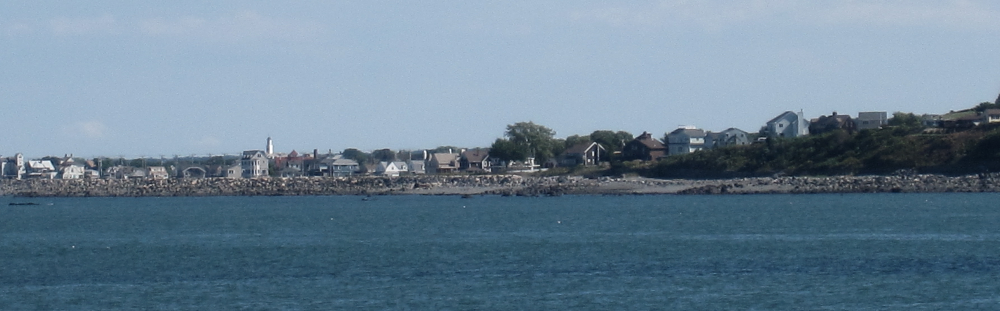
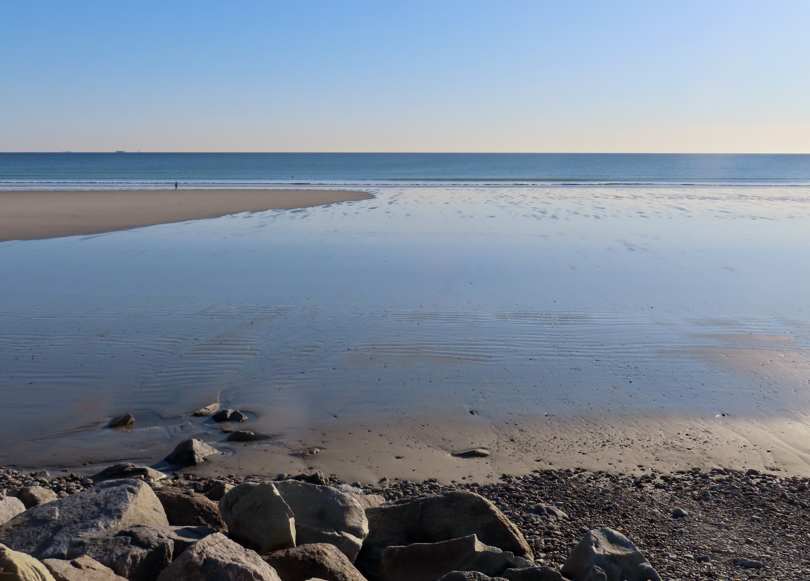

Independent community water quality initiative
Every household on the Hull peninsula gets its tap water from the Weir River Water System — a regional utility based in neighboring Hingham. We track the same federal EPA testing data that applies to Hull, in plain language, sourced from public records.
Hull sits at the far end of the Weir River Water System, drawing the same treated supply as Hingham and North Cohasset — sourced from Accord Pond and eleven groundwater wells across the Weir Watershed, all located in Hingham. EPA's Fifth Unregulated Contaminant Monitoring Rule (UCMR5), run between 2023 and 2025, found five PFAS "forever chemical" compounds in the system's testing results, which apply equally to Hull households.
None of this represents an EPA violation — the utility remains within its legal limits. But one of the compounds detected, PFOA, was measured above the EPA's own individual health-based limit for that chemical.
| Compound | Detected level | EPA limit (individual) |
|---|---|---|
| PFOA | 5.7 ppt | 4 ppt |
| PFBA | 5.7 ppt | — |
| PFBS | 3.3 ppt | — |
| PFPeA | 3.1 ppt | — |
| PFHxA | 3.1 ppt | — |
Source: EPA UCMR5 occurrence data, 2023–2025, for the Weir River Water System. See the full breakdown and methodology on the Water data page.


Hull Water Watch is a volunteer-run initiative started by Hull residents who noticed that most of the public conversation about the Weir River Water System — the utility that actually supplies Hull's taps — happens on the Hingham side of town lines. We wanted a plain-language, independent source that treats Hull's own households as the primary audience, not an afterthought.
We read the same Consumer Confidence Reports and EPA monitoring data everyone has access to, and translate what it actually means for a narrow peninsula town of about 10,000 people that doesn't operate its own water system.
Request a free in-home water test and a volunteer will follow up to walk through what your results mean.
Get a free water test